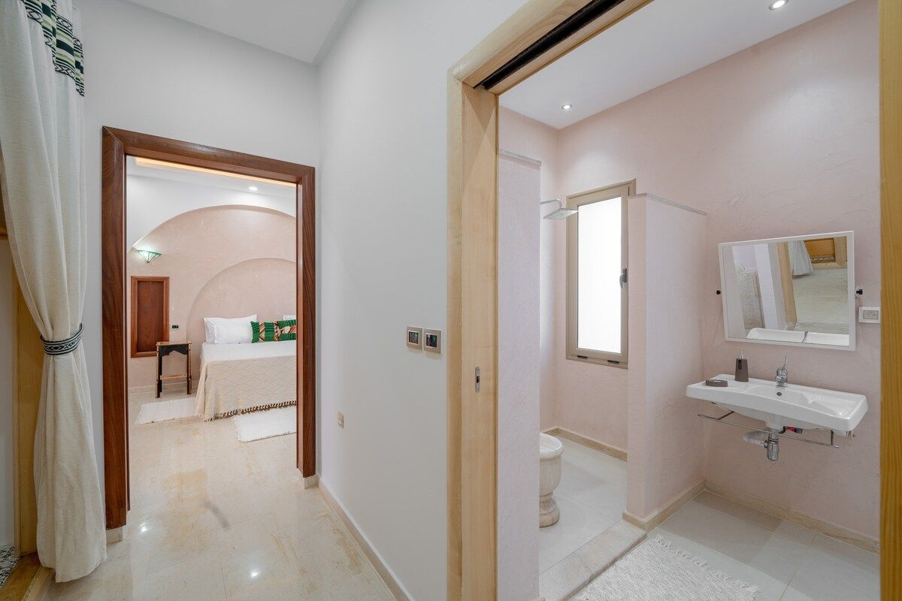
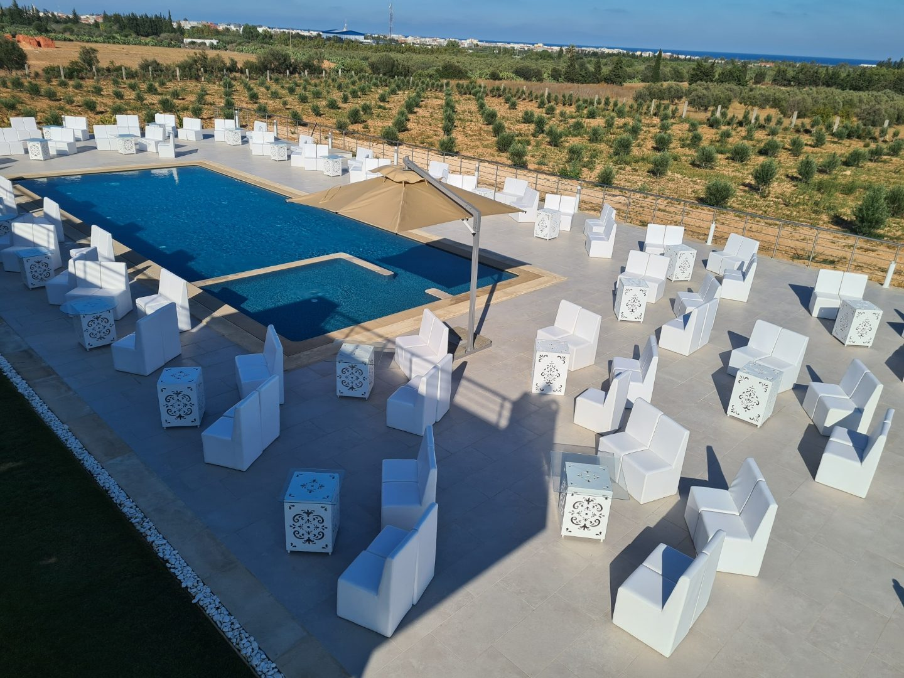
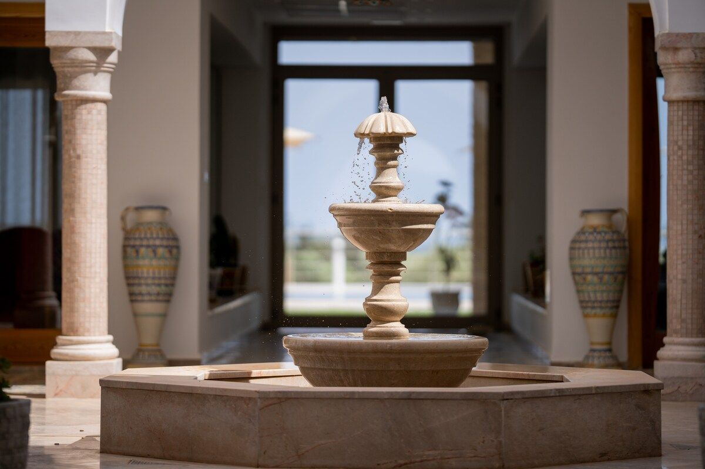
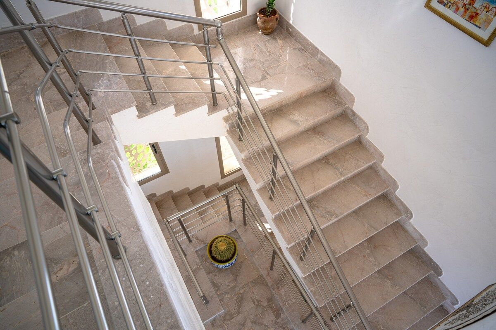
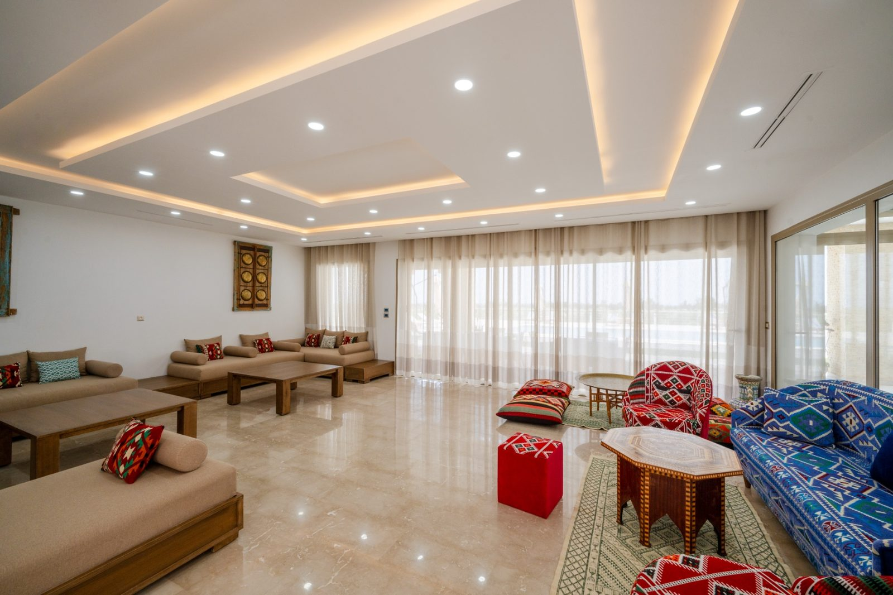
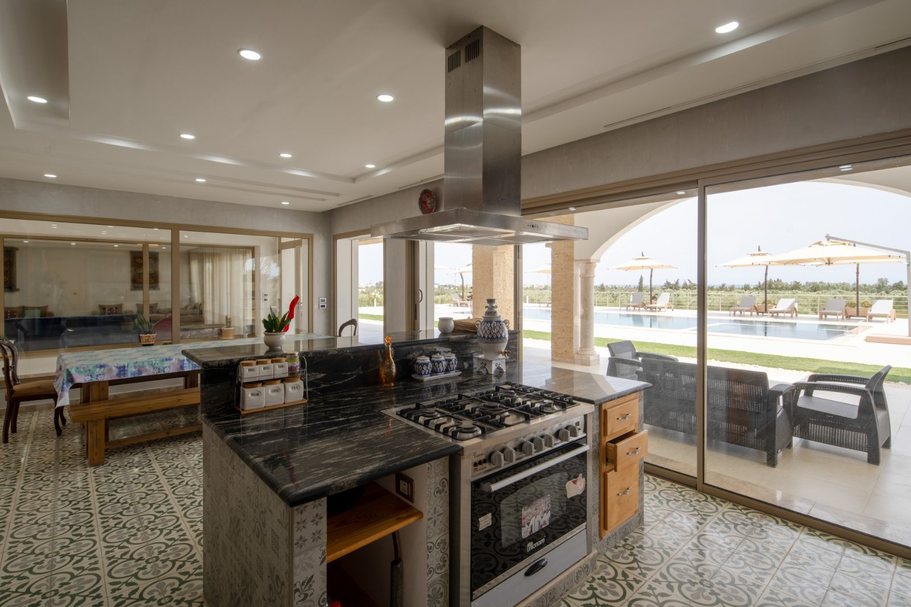
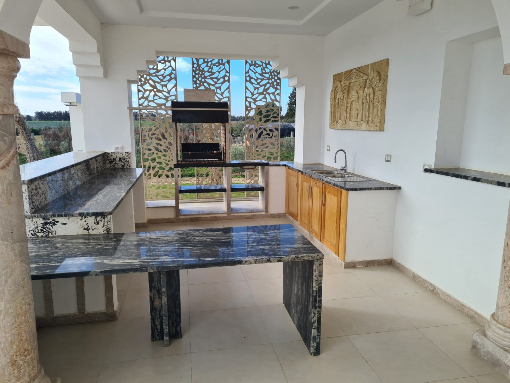
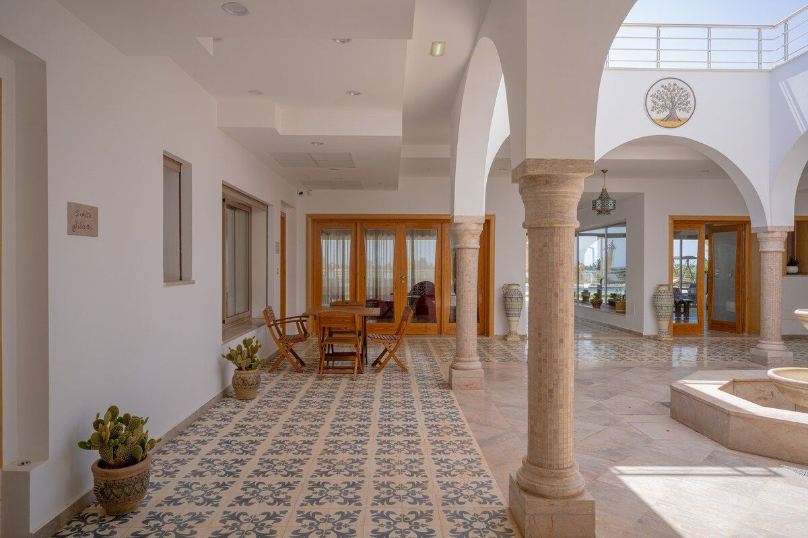
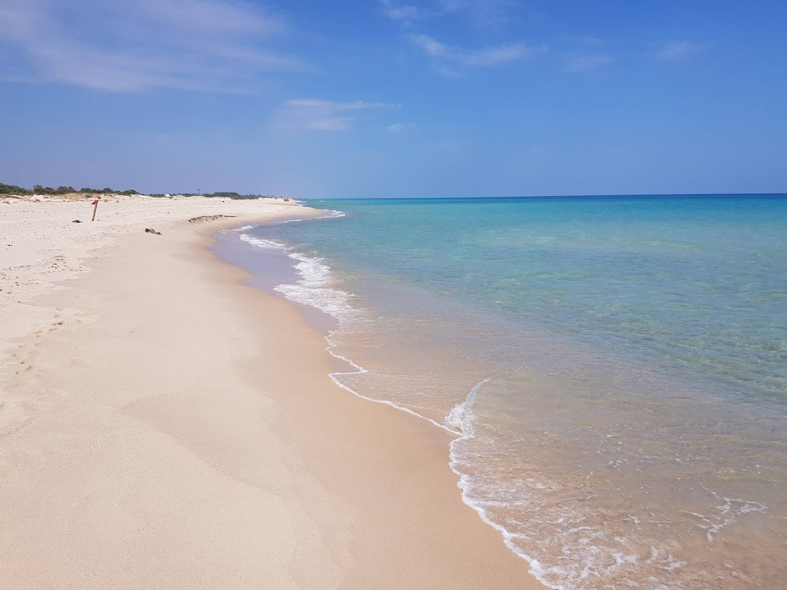

Dar Aïcha, un domaine de charme au Cap Bon
À Tazarka, entre oliviers, lumière méditerranéenne et art de recevoir.
Séjourner, célébrer ou s'immerger dans le domaine

La villa et la maison d'hôtes
9 suites, piscine et jardin — en location exclusive en haute saison, ou en maison d'hôtes le reste de l'année.

Mariages et événements
Un cadre privé entre oliviers et Méditerranée pour vos réceptions, sur devis.

Le domaine et l'oliveraie
4 hectares d'oliviers Koroneiki et une huile d'olive vierge extra produite sur place.

9 suites, un patio, des salons ouverts sur la piscine
Salons majlis, cuisines intérieure et extérieure, terrasses, jardin et piscine à débordement : Dar Aïcha se vit comme une grande maison familiale, entourée de son oliveraie.
Découvrir la villaVilla privatisée en haute saison, maison d'hôtes le reste de l'année
Haute saison
La villa entière est privatisable pour votre famille, vos amis ou votre groupe — 9 suites et tous les espaces communs pour vous seuls.
Découvrir la villaBasse saison
Hors haute saison, Dar Aïcha se transforme en maison d'hôtes : chambres et suites individuelles pour un séjour plus intime.
Découvrir la maison d'hôtesUne adresse de réception privée, sur devis
Jardin, piscine, terrasses et zones de réception : Dar Aïcha accueille vos mariages, fiançailles et événements privés dans un cadre entre oliviers et Méditerranée. Chaque formule est établie sur devis, selon la saison, la capacité confirmée et les autorisations applicables.
Organiser un événement

Retraites bien-être, ateliers, séminaires et séjours de groupe
Privatisez la villa entière hors haute saison pour une retraite bien-être ou yoga, un séminaire d'entreprise, un séjour en famille élargie ou un séjour oléicole au cœur de l'oliveraie.
Organiser un séjour de groupe4 hectares d'oliviers Koroneiki, une huile d'olive du domaine
Le domaine Dar Aïcha cultive 4 hectares d'oliviers Koroneiki à Tazarka. L'huile d'olive vierge extra produite sur place est proposée aux visiteurs et peut se découvrir lors d'un séjour terroir sur la propriété.
Découvrir le domaine
Un aperçu du domaine Dar Aïcha








Tazarka, entre mer et campagne du Cap Bon
Dar Aïcha se trouve à Tazarka, dans le gouvernorat de Nabeul, sur la péninsule du Cap Bon — à quelques minutes des plages de Nabeul et Maamoura, entre Tunis-Carthage et Enfidha-Hammamet.
Voir l'accès à Dar AïchaImaginez votre séjour à Dar Aïcha
Un séjour, une réception privée ou simplement une visite du domaine — contactez-nous par WhatsApp, e-mail ou via notre formulaire de devis.